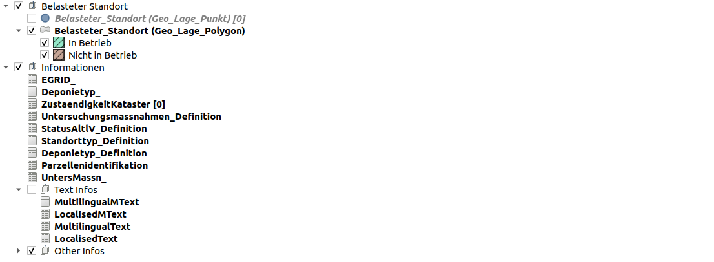
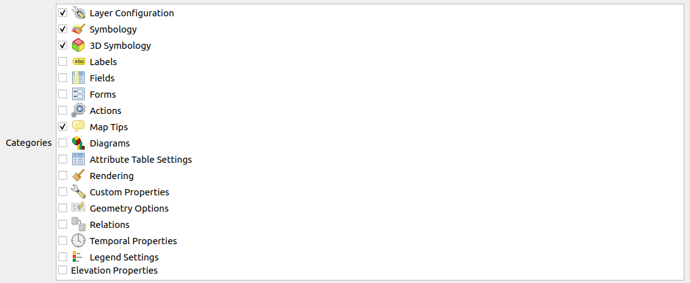
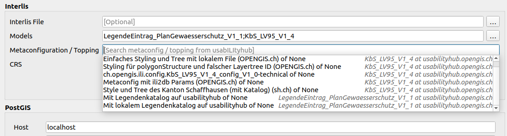

Toppingfiles
Metakonfiguration
... und wie sie in Model Baker behandelt wird.
Die Datei
ili2db-Konfigurationen werden im Metakonfigurationsfile definiert.
[ch.ehi.ili2db]
defaultSrsCode = 2056
smart2Inheritance = true
strokeArcs = false
importTid = true
Es kann an ili2db mit dem Parameter --metaConfig übergeben werden.
Implementierung im Model Baker
Einige Parameter werden automatisch im Hintergrund gesetzt, wenn ili2db von Model Baker aufgerufen wird (wie --coalesceCatalogueRef --createEnumTabs --createNumChecks --createUnique --createFk --createFkIdx --coalesceMultiSurface --coalesceMultiLine --coalesceMultiPoint --coalesceArray --beautifyEnumDispName --createGeomIdx --createMetaInfo --expandMultilingual --createTypeConstraint --createEnumTabsWithId --createTidCol --importTid), und andere können von den Benutzer:innen in der Eingabemaske von Model Baker konfiguriert werden (wie --smart1Inheritance/--smart2Inheritance, --createBasketCol, --strokeArcs, --iliMetaAttrs (für ini/toml), --preScript und --postScript oder --models). Zusätzlich wird das relevante Metakonfigurationsfile an ili2db übergeben. Aber Parameter, die direkt an ili2db übergeben werden, überschreiben die Konfigurationen des übergebenen Metakonfigurationsfiles.
Model Baker liest die ili2db-Parameter aus dem Metakonfigurationsfile. Die Parameter, die über die Eingabemaske von Model Baker gesetzt werden können, werden aus dem Metakonfigurationsfile in die Eingabemaske geladen. Die Benutzer:innen können sie nun anpassen. Model Baker übergibt nun das Metakonfigurationsfile und die Parameter aus der Eingabemaske (ob angepasst oder nicht) an ili2db. Wenn also die Parameter im Metakonfigurationsfile aufgeführt, aber dann in der Eingabemaske deaktiviert wurden, werden sie als false an ili2db übergeben.
Die von Model Baker im Hintergrund gesetzten Parameter werden weiterhin gesetzt. Aber sie können im Metakonfigurationsfile überschrieben werden. Wenn jedoch im Metakonfigurationsfile solche Parameter nicht erwähnt werden, dann werden sie auch nicht mit false überschrieben.
Ausnahme ist die Einstellung, nur das Metakonfigurationsfile zu berücksichtigen. Wenn dies gesetzt ist, sollen nur die im Metakonfigurationsfile konfigurierten Parameter gesetzt werden und keine anderen (Ausnahme von der Ausnahme ist --models und --sqlEnableNull bei "Ausführen ohne Constraints"):
[CONFIGURATION]
qgis.modelbaker.metaConfigParamsOnly = True
Wenn dieser Parameter gesetzt ist, sind die Einstellungen Erweiterten Optionen und CRS in der Eingabemaske deaktiviert.
Warning
Beachte, dass das UsabILIty Toppings Repository (unter https://models.opengis.ch) von ili2db nicht gefunden wird, wenn es ihm nicht zusätzlich mit --modelDir übergeben wird. Derzeit machen wir das automatisch. Das heisst, wenn du eine Metaconfigdatei zur Übergabe auswählst, wird --modelDir https://models.opengis.ch automatisch zum Befehl hinzugefügt. Bezüglich benutzerdefiniertem Verzeichnis/Repository musst du es manuell in den Model Baker Einstellungen hinzufügen.
Referenzierung anderer INTERLIS-Modelle
Mithilfe der ili2db-Einstellungen ist es möglich, andere Modelle aus Metakonfigurationsfiles zu referenzieren. Wenn die Einstellung den Wert models=KbS_LV95_v1_4;KbS_Basis enthält, wird dies auch in der Eingabemaske von Model Baker angepasst. Natürlich wird eine Suche nach möglichen Metakonfigurationsfiles auf den Repositories erneut gestartet, entsprechend den aktuell gesetzten Modellen. Siehe dazu auch Mehrere Modelle und ihre Toppings.
Toppings
... und ihre Konfiguration.
Toppingfiles sind Dateien, die in der Metakonfiguration oder in anderen Toppingfiles wie z. B. dem Projekttoppingfile referenziert werden und die Konfigurationsinformationen des GIS-Projekts oder Teile davon enthalten. Sie können also Formularkonfigurationen, Style-Attribute sowie die Legendenbaum-Struktur sein. Für jedes Tool können individuelle Toppingfiles verwendet werden.
Model Baker unterstützt diese Arten von Toppingfiles:
- Projekttoppingfiles:
yaml-Dateien für Projekteinstellungen wie Legendenanzeige, Verlinkung zu Layer-Konfigurationsdateien und Layer-Reihenfolge - QML Layer Style:
qml-Dateien für Layer-Konfigurationen - Layer Definition:
qlr-Dateien für Layer-Definitionen
Projektopping (yaml)
Informationen über das Projekt wie der Layertree, die Layer im Layertree und die Anzeigereihenfolge können in einem Toppingfile enthalten sein. Die DatasetMetadata-Id der Datei wird im Metakonfigurationsfile über den Parameter qgis.modelbaker.projecttopping (oder das veraltete qgis.modelbaker.layertree) definiert.
Die Datei wird in yaml geschrieben:
layertree:
- "Belasteter Standort":
group: true
checked: true
expanded: true
mutually-exclusive: true
mutually-exclusive-child: 1
child-nodes:
- "Belasteter_Standort (Geo_Lage_Punkt)":
featurecount: true
qmlstylefile: "ilidata:ch.opengis.topping.opengisch_KbS_LV95_V1_4_001"
- "Belasteter_Standort (Geo_Lage_Polygon)":
expanded: true
qmlstylefile: "ilidata:ch.opengis.topping.opengisch_KbS_LV95_V1_4_023"
- "Informationen":
group: true
checked: true
expanded: true
child-nodes:
- "EGRID_":
- "Deponietyp_":
- "ZustaendigkeitKataster":
featurecount: true
- "Untersuchungsmassnahmen_Definition":
featurecount: false
- "StatusAltlV_Definition":
- "Standorttyp_Definition":
- "Deponietyp_Definition":
- "Parzellenidentifikation":
- "UntersMassn_":
- "Text Infos":
group: true
checked: false
expanded: true
child-nodes:
- "MultilingualMText":
- "LocalisedMText":
- "MultilingualText":
- "LocalisedText":
- "Other Infos":
group: true
checked: true
expanded: false
child-nodes:
- "StatusAltlV":
- "Standorttyp":
- "UntersMassn":
- "Deponietyp":
- "LanguageCode_ISO639_1":
- "Another interesting layer":
definitionfile: "ilidata:ch.opengis.topping.opengisch_roadsigns_layer_101"
- "WMS Map":
provider: "wms"
uri: "contextualWMSLegend=0&crs=EPSG:2056&dpiMode=7&featureCount=10&format=image/jpeg&layers=ch.bav.kataster-belasteter-standorte-oev_lines&styles=default&url=https://wms.geo.admin.ch/?%0ASERVICE%3DWMS%0A%26VERSION%3D1.3.0%0A%26REQUEST%3DGetCapabilities"
layerorder:
- "Belasteter_Standort (Geo_Lage_Polygon)"
- "Belasteter_Standort (Geo_Lage_Punkt)"
Layertree
Der Layertree wird mithilfe einer Baumstruktur im yaml-Format beschrieben.
Der oberste Eintrag ist layertree (oder veraltet: legend). Dieser Eintrag wird in der Legende nicht angezeigt.
Es können Gruppen oder Layer folgen. Die folgenden Parameter sind für beide Typen gültig:
checked: true/falsedefiniert, ob der Knoten sichtbar ist oder nichtexpanded: true/falsedefiniert, ob der Knoten aufgeklappt ist oder nichtfeaturecount: true/falsedefiniert, ob die Anzahl der Features angezeigt werden soll oder nichtdefinitionfile: "ilidata..."definiert den Pfad/Link zu einer Layer-/Gruppen-Definitions-QLR-Datei.
Gruppen müssen als solche mit dem Parameter group: true definiert werden. Andernfalls wird angenommen, dass es sich um einen Layer handelt. Die Gruppen sollten den Parameter child-nodes enthalten, unter dem Untergruppen und Layer definiert werden können.
Zusätzlich haben die Gruppen die Eigenschaft mutually-exclusive. Das bedeutet, ob die Untergruppen und Layer gegenseitig ausschliessend sind. Das bedeutet, dass jeweils nur ein Kindelement sichtbar sein kann.
mutually-exclusive: true, wenn jeweils nur ein Kindelement sichtbar sein soll.mutually-exclusive-child: 0das anzuzeigende Kindelement.
Layer können zusätzlich den Pfad/Link zu QML-Dateien definiert haben, die Layer-Eigenschaften wie Formularkonfiguration, Symbologie usw. enthalten.
- qmlstylefiles: "ilidata..."
Und man kann die Quelle auch direkt in den Layern definieren:
- provider: "wms" definiert den Provider-Typ (unterstützt werden ogr, postgres und wms)
- uri: "contextualWMSLegend=0&crs=EPSG... definiert die Quell-URI des Layers.
Die oben gezeigte yaml-Datei ergibt eine Legendenstruktur in QGIS.

Umbenennen von Layern
Normalerweise werden die vorhandenen Layer anhand der Namen erkannt. Dies funktioniert in den meisten Fällen gut. Aber manchmal (z. B. wenn ein erweitertes Modell mit Layern vorhanden ist, die denselben Namen wie das Basismodell haben) müssen die Layer anhand anderer Parameter erkannt werden. Dies gibt die Möglichkeit, den Layer so zu benennen, wie du möchtest.
Es erkennt Layer aus der Datenbank optional anhand von tablename und geometrycolumn. INTERLIS-basierte Layer können auch anhand des iliname identifiziert werden. Es nimmt die erste Übereinstimmung von tablename oder iliname und andernfalls sucht es nach dem Layernamen.
Siehe das Beispiel:
- "KbS_LV95_V1_4 Layers":
group: true
child-nodes:
- "Punkt Standort":
tablename: "belasteter_standort"
geometrycolumn: "geo_lage_punkt"
qmlstylefile: "../layerstyle/opengisch_KbS_LV95_V1_4_004_belasteterstandort_punkt.qml"
- "Polygon Standort":
iliname: "KbS_LV95_V1_4.Belastete_Standorte.Belasteter_Standort"
geometrycolumn: "geo_lage_polygon"
qmlstylefile: "../layerstyle/opengisch_KbS_LV95_V1_4_001_belasteterstandort_polygon.qml"
- "Parzellen":
tablename: "parzellenidentifikation"
iliname: "KbS_Basis_V1_4.Parzellenidentifikation"
qmlstylefile: "../layerstyle/opengisch_KbS_LV95_V1_4_005_parzellenidentifikation.qml"
Note
Beachte, dass über QML-Styledateien geladene Relationen auf den Layernamen beruhen. Das bedeutet, du musst vorsichtig sein, wenn die Styledateien mit anderen Layernamen als im YAML definiert exportiert wurden.
Anzeigereihenfolge
Die Anzeigereihenfolge der Layer wird als einfache Liste definiert:
layer-order:
- "Belasteter_Standort (Geo_Lage_Polygon)"
- "Belasteter_Standort (Geo_Lage_Punkt)"
Mehrere Modelle mit mehreren Projekttoppings
Layer mit derselben Datenquelle werden nicht zweimal hinzugefügt, wenn das Projekt neu generiert wird. Neue Layer und Untergruppen werden – wenn möglich – in bereits existierende Gruppen geladen. Andernfalls werden Geometrie-Layer oberhalb und die Gruppen "tables" und "domains" unterhalb hinzugefügt.
Somit werden Legendenstrukturen aus mehreren Projekttoppingfiles zusammengeführt.
Layer-Eigenschaften Topping (qml)
Für Layer-Eigenschaften wie Formularkonfigurationen, Symbologie usw. werden qml-Dateien als Toppingfiles geladen.
Rechtsklick auf den Layer > Exportieren > Als QGIS-Layerstildatei speichern...

Die qml-Toppingfiles werden direkt im Layertree des Projekttoppingfiles zugewiesen.
- "Belasteter_Standort (Geo_Lage_Punkt)":
featurecount: true
qmlstylefile: "ilidata:ch.opengis.topping.opengisch_KbS_LV95_V1_4_001"
Die "veraltete" Art, die Zuordnung im Metakonfigurationsfile vorzunehmen, wird weiterhin unterstützt.
[qgis.modelbaker.qml]
"Belasteter_Standort (Geo_Lage_Polygon)"=file:toppings_in_modelbakerdir/layerstyle/opengisch_KbS_LV95_V1_4_001_belasteterstandort_polygon.qml
"Belasteter_Standort (Geo_Lage_Punkt)"=ilidata:ch.opengis.topping.opengisch_KbS_LV95_V1_4_001
ZustaendigkeitKataster=ilidata:ch.opengis.configs.KbS_LV95_V1_4_0032
Layer-Definition Topping (qlr)
Vollständige Layer-Definitionen (oder auch Gruppen) können als Topping files exportiert werden.
Rechtsklick auf den Layer > Exportieren > Als Layerdefinitionsdatei speichern...
Die qlr-Toppingfiles werden direkt im Layertree des Projekttoppingfiles zugewiesen.
- "Roads from QLR":
definitionfile: "ilidata:ch.opengis.topping.opengisch_roadsigns_layer_101"
Note
Die Datenquelle in der QLR-Datei ist relativ. Das bedeutet, du musst bei QLR-Dateien vorsichtig sein, die dateibasierte Datenquellen bereitstellen.
Referenzierte Daten
Kataloge und Transferfiles (und andere itf/xtf/xml-Dateien) können ebenfalls geladen werden. Die DatasetMetadata-Ids werden im Metakonfigurationsfile über den globalen Parameter ch.interlis.referenceData definiert. Es können mehrere Ids und Dateipfade angegeben werden (getrennt durch ;).
Diese Datenfiles werden im Wizard zur Liste der zu importierenden Dateien hinzugefügt.
Direkt referenzierte Kataloge
Kataloge können in der ilidata.xml direkt mit den Modellnamen verlinkt werden (ohne Verwendung eines Metakonfigurationsfiles). Füge sie einfach als referenceData hinzu und füge die Modellnamen in den categories hinzu.
<categories>
<DatasetIdx16.Code_>
<value>http://codes.interlis.ch/type/referenceData</value>
</DatasetIdx16.Code_>
<DatasetIdx16.Code_>
<value>http://codes.interlis.ch/model/Wildruhezonen_LV95_V2_1</value>
</DatasetIdx16.Code_>
<DatasetIdx16.Code_>
<value>http://codes.interlis.ch/model/Wildruhezonen_LV03_V2_1</value>
</DatasetIdx16.Code_>
</categories>
Model Baker überprüft die Repositories auf alle im Datenbankschema enthaltenen Modelle. Wenn es ein referenziertes Katalogdatum findet, stellt es sie im Autovervollständigungs-Widget beim Datenimport bereit.
<files>
<DatasetIdx16.DataFile>
<fileFormat>application/interlis+xml;version=2.3</fileFormat>
<file>
<DatasetIdx16.File>
<path>BAFU/Wildruhezonen_Catalogues_V2_1.xml</path>
<md5>1b76026907fc814bfaa12e2a4f53afa5</md5>
</DatasetIdx16.File>
</file>
</DatasetIdx16.DataFile>
</files>
Aber bereits vor dem Datenimport überprüft Model Baker die Repositories auf diese referenzierten Daten. Beim Import der INTERLIS-Modelle stellt es alle in der Eigenschaft modelLink gefundenen Modelle bereit.
<baskets>
<DatasetIdx16.DataIndex.BasketMetadata>
<id>ch.admin.bafu.wildruhezonen_catalogues_V2_1</id>
<version>2020-02-24</version>
<model>
<DatasetIdx16.ModelLink>
<name>Wildruhezonen_Codelisten_V2_1.Codelisten</name>
</DatasetIdx16.ModelLink>
</model>
<owner>mailto:models@geo.admin.ch</owner>
</DatasetIdx16.DataIndex.BasketMetadata>
</baskets>
</DatasetIdx16.DataIndex.DatasetMetadata>
Mehrere Modelle und ihre Toppings
Derzeit listet eine Liste von "LegendeEintrag_PlanGewaesserschutz_V1_1;KbS_LV95_V1_4;KbS_Basis_V1_4" die Metakonfigurationsfiles für all diese Modelle auf.

Aber dann kann nur eines ausgewählt werden. Wenn du mehrere Metakonfigurationsfiles auswählen möchtest, musst du die Modelle nacheinander importieren.Best Practice
Am besten erstellst du ein Metakonfigurationsfile, das für den Import aller Modelle gilt, die du normalerweise auswählst. Und um das Ganze noch komfortabler zu machen, kannst du das zusätzliche Modell auch im Metakonfigurationsfile konfigurieren. Wenn ein Metakonfigurationsfile für den Import beider Modelle "KbS_LV95_V1_4;KbS_Basis_V1_4" gültig ist, kannst du auch beide Modelle darin konfigurieren:
[ch.ehi.ili2db]
models = KbS_Basis_V1_4;KbS_Basis_V1_4
Somit wird die Metakonfiguration durch beide Modellnamen gefunden und beim Einlesen von "KbS_LV95_V1_4;KbS_Basis_V1_4" in die Eingabemaske von Model Baker geladen.
Verwendung eines lokalen Repositories
Es kann für Testzwecke nützlich sein, ein lokales Repository verwenden zu können. Dies wird als benutzerdefiniertes Modell-Verzeichnis konfiguriert. ilidata.xml und ilimodels.xml werden darin gesucht und geparst.